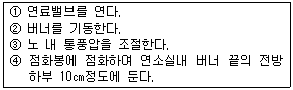

에너지관리기능사 (2011-02-13 기출문제)
1과목: 임의 구분
1. 보일러의 배기가스 성분을 측정하여 공기비를 계산하여 실제 건배기 가스량을 계산하는 공식으로 맞는 것은? (단, G : 실제 건배기가스량, Go : 이론 건배기가스량, Ao : 이론연소공기량, m : 공기비)
- G = m×Ao
- G = Go＋(m-1)×Ao
- G = (m-1)×Ao
- G = Go＋(m×Ao)
(정답률: 50%)

2. 제어장치에서 인터록(inter lock)이란?
- 정해진 순서에 따라 차례로 동작이 진행되는 것.
- 구비조건에 맞지 않을 때 작동을 정지시키는 것.
- 증기압력의 연료량, 공기량을 조절하는 것.
- 제어량과 목표치를 비교하여 동작시키는 것.
(정답률: 86%)
3. 15℃의 물을 보일러에 급수하여 엔탈피 655.15kcal/kg인 증기를 한 시간에 150kg만들 때의 보일러 마력은?
- 10.3마력
- 11.4마력
- 13.6마력
- 19.3마력
(정답률: 54%)
4. 보일러 안전밸브 부착에 관한 설명으로 잘못된 것은?
- 안전밸브는 바이패스 배관으로 설치한다.
- 쉽게 검사할 수 있는 장소에 설치한다.
- 밸브 축을 수직으로 한다.
- 가능한 한 보일러 동체에 직접 부착한다.
(정답률: 65%)
5. 이상기체가 상태변화를 하는 동안 외부와의 사이에 열의 출입이 없는 변화는?
- 정압변화
- 정적변화
- 단열변화
- 폴리트로픽 변화
(정답률: 79%)
6. 중유 연소보일러에서 중유를 예열하는 목적 설명으로 잘못된 것은?
- 연소효율을 높인다.
- 분무상태를 양호하게 한다.
- 중유의 유동을 원활히 해 준다.
- 중유의 점도를 증대시켜 관통력을 크게 한다.
(정답률: 87%)
7. 보일러의 연관에 대한 설명으로 옳은 것은?
- 관의 내부에서 연소가 이루어지는 관
- 관의 외부에서 연소가 이루어지는 관
- 관의 내부에는 물이 차있고 외부로는 연소가스가 흐르는 관
- 관의 내부에는 연소가스가 흐르고 외부로는 물이 차있는 관
(정답률: 66%)
8. 보일러 운전 중 프라이밍(priming)이 발생하는 경우는?
- 보일러 증기압력이 낮을 때
- 보일러수가 농축되지 않았을 때
- 부하를 급격히 증가시킬 때
- 급수 공급이 원활할 때
(정답률: 75%)
9. 다음 중 용적식 유량계가 아닌 것은?
- 로타리형 유량계
- 피토우관 유량계
- 루트형 유량계
- 오벌기어형 유량계
(정답률: 56%)
10. 가스연료 연소 시 화염이 버너에서 일정거리 떨어져서 연소하는 현상은?
- 역화
- 리프팅
- 옐로우 팁
- 불완전연소
(정답률: 65%)
11. 난방부하가 24,000kcal/h인 아파트에 효율이 80%인 유류 보일러로 난방하는 경우 연료의 소모량은 약 몇 kg/h인가? (단, 유류의 저위 발열량은 9,750kcal/kg이다.)
- 2.56
- 3.08
- 3.46
- 4.26
(정답률: 56%)
12. 보일러의 증기헤더(steam header)에 관한 설명으로 틀린 것은?
- 발생증기를 효율적으로 사용할 수 있다.
- 원통보일러에는 필요가 없다.
- 불필요한 열손실을 방지한다.
- 증기의 공급량을 조절한다.
(정답률: 81%)
13. 보일러 부속장치 설명 중 틀린 것은?
- 슈트블로워 - 전열면에 부착된 그을음 제거 장치
- 공기예열기 - 연소용 공기를 예열하는 장치
- 증기축열기 - 증기의 과부족을 해소하는 장치
- 절탄기 - 발생된 증기를 과열하는 장치
(정답률: 76%)
14. 다음 중 가연성가스가 아닌 것은?
- 수소
- 아세틸렌
- 산소
- 프로판
(정답률: 75%)
15. 고위발열량 9,800kcal/kg인 연료 3kg을 연소시킬 때 발생되는 총 저위발열량은 약 몇 kcal/kg인가? (단, 연료 1kg당 수소(H)분은 15%, 수분은 1%의 비율로 들어있다.)
- 8,984kcal
- 44,920kcal
- 26,952kcal
- 25,117kcal
(정답률: 45%)
16. 연소용 공기를 노의 앞에서 불어 넣으므로 공기가 차고 깨끗하며 송풍기의 고장이 적고 점검 수리가 용이한 보일러의 강제통풍 방식은?
- 압입통풍
- 흡입통풍
- 자연통풍
- 수직통풍
(정답률: 77%)
17. 1보일러 마력을 시간당 발생 열량으로 환산하면?
- 15.65kcal/h
- 8,435kcal/h
- 9,290kcal/h
- 7,500kcal/h
(정답률: 70%)
18. 보일러 자동제어에서 목표치와 결과치의 차이 값을 처음으로 되돌려 계속적으로 정정동작을 행하는 제어는?
- 순차제어
- 인터록 제어
- 캐스케이드 제어
- 피드백 제어
(정답률: 74%)
19. 연료 공급 장치에서 서비스탱크의 설치 위치로 적당한 것은?
- 보일러로부터 2m 이상 떨어져야 하며, 버너보다 1.5m이상 높게 설치한다.
- 보일러로부터 1.5m 이상 떨어져야 하며, 버너보다 2m이상 높게 설치한다.
- 보일러로부터 0.5m 이상 떨어져야 하며, 버너보다 0.2m이상 높게 설치한다.
- 보일러로부터 1.2m 이상 떨어져야 하며, 버너보다 2m이상 높게 설치한다.
(정답률: 60%)
20. 다음 중 원통형 보일러가 아닌 것은?
- 입형 횡관식 보일러
- 벤슨 보일러
- 코르니시 보일러
- 스코치 보일러
(정답률: 59%)
2과목: 임의 구분
21. 증기건도(X)에 대한 설명으로 틀린 것은?
- X = 0은 포화수
- X = 1은 포화증기
- 0 〈 X 〈 1은 습증기
- X = 100은 물이 모두 증기가 된 순수한 포화증기
(정답률: 56%)
22. 보일러의 성능에 관한 설명으로 틀린 것은?
- 연소실로 공급된 연소가 완전연소시 발생될 열량과 드럼 내부에 있는 물이 그 열을 흡수하여 증기를 발생하는데 이용된 열량과의 비율을 보일러 효율이라 한다.
- 전열면 1m2당 1시간 동안 발생되는 증발량을 상당증발량으로 표시한 것을 증발률이라고 한다.
- 27.25kg/h의 상당증발량을 1보일러 마력이라 한다.
- 상당증발량 Ge와 실제증발량 Ga의 비 즉, Ge/Ga를 증발계수라고 한다.
(정답률: 80%)
23. 긴 관의 한 끝에서 펌프로 압송된 급수가 관을 지나는 동안 차례로 가열, 증발, 과열되어 다른 끝에서는 과열증기가 나가는 형식의 보일러는?
- 노통보일러
- 관류보일러
- 연관보일러
- 입형보일러
(정답률: 78%)
24. 보일러 연소 자동제어를 하는 경우 연소 공기량은 어느 값에 따라 주로 조절되는가?
- 연료 공급량
- 발생 증기 온도
- 발생 증기량
- 급수 공급량
(정답률: 70%)
25. 보일러에 절탄기를 설치하였을 때의 특징으로 틀린 것은?
- 보일러 증발량이 증대하여 열효율을 높일 수 있다.
- 보일러수와 급수와의 온도차를 줄여 보일러 동체의 열응력을 경감시킬 수 있다.
- 저온부식을 일으키기 쉽다.
- 통풍력이 증가한다.
(정답률: 54%)
26. 보일러의 집진장치 중 집진효율이 가장 높은 것은?
- 관성력 집진기
- 중력식 집진기
- 원심력식 집진기
- 전기식 집진기
(정답률: 84%)
27. 보일러 급수장치의 설명 중 옳은 것은?
- 인젝터는 급수온도가 낮을 때는 사용하지 못한다.
- 볼류트 펌프는 증기압력으로 구동됨으로 별도의 동력이 필요 없다.
- 응축수 탱크는 급수탱크로 사용하지 못한다.
- 급수내관은 안전저수위보다 약 5㎝아래에 설치한다.
(정답률: 58%)
28. 보일러의 자동제어에서 제어량에 따른 조작량의 대상으로 맞는 것은?
- 증기온도-연소가스량
- 증기압력-연료량
- 보일러 수위-공기량
- 노내압력-급수량
(정답률: 59%)
29. 보일러의 상당증발량을 구하는 식으로 옳은 것은? (단 h1 : 급수엔탈피, h2 : 발생증기엔탈피)
- 상당증발량 = 실제증발량×(h2 - h1)/539
- 상당증발량 = 실제증발량×(h1 - h2)/539
- 상당증발량 = 실제증발량×(h2 - h1)/639
- 상당증발량 = 실제증발량/639
(정답률: 73%)
30. 보일러의 매체별 분류 시 해당하지 않는 것은?
- 증기 보일러
- 가스 보일러
- 열매체 보일러
- 온수 보일러
(정답률: 60%)
31. 보일러에서 이상 폭발음이 있다면 가장 먼저 해야 할 조치사항으로 맞는 것은?
- 급수 중단
- 연료공급 차단
- 증기출구 차단
- 송풍기 가동 중지
(정답률: 89%)
32. 보일러의 부식에서 가성취화를 올바르게 설명한 것은?
- 농도가 다른 두 가지가 동일 전해질의 용해에 의해 부식이 생기는 것.
- 보일러 판의 리벳구멍 등에 농후한 알칼리 작용에 의해 강 조직을 침범하여 균열이 생기는 것.
- 보일러 수에 용해 염류가 분해를 일으켜 보일러를 부식시키는 것.
- 보일러 수에 수소이온 농도가 크게 되어 보일러를 부식시키는 것.
(정답률: 67%)
33. 가스보일러에서 가스폭발의 예방을 위한 유의사항 중 틀린 것은?
- 가스압력이 적당하고, 안정되어 있는지 점검한다.
- 화로 및 굴뚝의 통풍, 환기를 완벽하게 하는 것이 필요하다.
- 점화용 가스의 종류는 가급적 화력이 낮은 것을 사용한다.
- 착화 후 연소가 불안정할 때는 즉시 가스공급을 중단한다.
(정답률: 84%)
34. 온수발생 보일러의 전열면적이 10m2미만일 때 방출관의 안지름의 크기는?
- 15㎜ 이상
- 20㎜ 이상
- 25㎜ 이상
- 50㎜ 이상
(정답률: 33%)
35. 다음 보기를 보고 기름보일러의 수동조작 점화요령 순서로 가장 적합한 것은?

- ③-④-②-①
- ①-②-③-④
- ②-①-④-③
- ④-②-③-①
(정답률: 59%)
36. 온수난방설비에서 온수, 온도차에 의한 비중력차로 순환하는 방식으로 단독주택이나 소규모 난방에 사용되는 것은?
- 강제순환식 난방
- 하향순환식 난방
- 자연순환식 난방
- 상향순환식 난방
(정답률: 78%)
37. 난방면적이 100㎡, 열손실지수 90kcal/㎡·h, 온수온도 80℃, 실내온도 20℃ 일 때 난방부하(kcal/h)는?
- 7,000
- 8,000
- 9,000
- 10,000
(정답률: 56%)
38. 기둥형 주철제 방열기는 벽과 얼마정도의 간격을 두고 설치하는 것이 좋은가?
- 50~60㎜
- 80~90㎜
- 110~130㎜
- 140~160㎜
(정답률: 73%)
39. 전열면적이 10㎡ 이하의 보일러에는 분출밸브의 크기를 호칭지름 몇 ㎜이상으로 할 수 있는가?
- 5㎜
- 10㎜
- 15㎜
- 20㎜
(정답률: 56%)
40. 노내의 미연가스가 돌연 착화해서 급격한 연소(폭발연소)를 일으켜 화염이나 연소가스가 전부 연도로 흐르지 않고 연소실 입구나 감시창으로부터 밖으로 분출하는 현상은?
- 역화
- 인화
- 점화
- 열화
(정답률: 81%)
3과목: 임의 구분
41. 보일러의 설비면에서 수격작용의 예방조치로 틀린 것은?
- 증기배관에는 충분한 보온을 취한다.
- 증기관에는 중간을 낮게 하는 배관방법은 드레인이 고이기 쉬우므로 피해야 한다.
- 증기관은 증기가 흐르는 방향으로 경사가 지도록 한다.
- 대형밸브나 증기헤더에도 드레인 배출장치 설치를 피해야 한다.
(정답률: 63%)
42. 강제순환식 온수난방에 대한 설명으로 잘못된 것은?
- 온수의 순환 펌프가 필요하다.
- 온수를 신속하고 고르게 순환시킬 수 있다.
- 중력 순환식에 비하여 배관의 직경이 커야 한다.
- 대규모 난방용으로 적당하다.
(정답률: 71%)
43. 어떤 온수방열기의 입구 온수온도가 85℃, 출구 온수온도가 65℃, 실내온도가 18℃일 때 방열기의 방열량은? (단, 방열기의 방열계수는 7.4m2h℃이다.)
- 421.8kcal/m2h
- 450.0kcal/m2h
- 435.6kcal/m2h
- 650.0kcal/m2h
(정답률: 37%)
44. 보일러를 6개월 이상 장기간 사용하지 않고 보존할 때 가장 적합한 보존방법은?
- 만수보존법
- 분해보존법
- 건조보존법
- 습식보존법
(정답률: 69%)
45. 보일러설치검사 기준상 보일러의 외벽온도는 주위온도보다 몇 ℃를 초과해서는 안 되는가?
- 20℃
- 30℃
- 50℃
- 60℃
(정답률: 46%)
46. 가스연소장치의 점화요령으로 맞는 것은?
- 점화전에 연소실 용적의 약 1/4배 이상 공기량으로 환기한다.
- 기름연소장치와 달리 자동 재 점화가 되지 않도록 한다.
- 가스압력이 소정압력 보다 2배 이상 높은지를 확인하고 착화는 2회에 이루어지도록 한다.
- 착화 실패나 갑작스런 실화 시 원인을 조사한 후 연료공급을 중단한다.
(정답률: 53%)
47. 다음 중 보일러의 운정정지 시 가장 뒤에 조작하는 작업은?
- 연료의 공급을 정지시킨다.
- 연소용 공기의 공급을 정지시킨다.
- 댐퍼를 닫는다.
- 급수펌프를 정지시킨다.
(정답률: 84%)
48. 하트포드 접속에 대한 설명으로 맞지 않는 것은?
- 환수관내 응축수에서 발생하는 플래시(flash)증기의 발생을 방지한다.
- 저압증기난방의 습식환수 방식에 쓰인다.
- 보일러수가 환수관으로 역류하는 것을 방지한다.
- 증기관과 환수관 사이에 표준수면에서 50㎜ 아래에 균형관을 설치한다.
(정답률: 42%)
49. 보일러 급수 중의 탄산가스(CO2)를 제거하는 급수처리 방법으로 가장 적합한 것은?
- 기폭법
- 침강법
- 응집법
- 여과법
(정답률: 68%)
50. 벽이나 바닥 등에 가열용 코일을 묻고 여기에 온수를 보내 열로 난방하는 방법은?
- 개별 난방법
- 복사 난방법
- 간접 난방법
- 직접 난방법
(정답률: 77%)
51. 강철제 보일러 수압시험시의 시험수압은 규정된 압력의 몇 %이상을 초과하지 않도록 하여야 하는가?
- 3%
- 6%
- 8%
- 10%
(정답률: 60%)
52. 보일러 연소 시 가마울림 현상을 방지하기 위한 대책으로 잘못된 것은?
- 수분이 많은 연료를 사용한다.
- 2차 공기를 가열하여 통풍조절을 적정하게 한다.
- 연소실내에서 완전 연소시킨다.
- 연소실이나 연도를 연소가스가 원활하게 흐르도록 개량한다.
(정답률: 79%)
53. 지역난방의 특징 설명으로 잘못된 것은?
- 각 건물에 보일러를 설치하는 경우에 비해 열효율이 좋다.
- 설비의 고도화에 따라 도시 매연이 증가된다.
- 연료비와 인건비를 줄일 수 있다.
- 각 건물에 보일러를 설치하는 경우에 비해 건물의 유효면적이 증대된다.
(정답률: 74%)
54. 온수난방의 분류를 사용온수에 의해 분류할 때 고온수식 온수온도의 범위는 보통 몇 ℃정도인가?
- 50~60
- 70~80
- 85~90
- 100~150
(정답률: 61%)
55. 열사용 기자재 관리 규칙에 의한 검사대상기기 중 소형온수보일러의 검사대상기기 적용범위에 해당하는 가스사용량은 몇 kg/h를 초과하는 것부터 인가?
- 15kg/h
- 17kg/h
- 20kg/h
- 25kg/h
(정답률: 48%)
56. 에너지이용합리화법상 에너지이용 합리화 기본계획 사항에 포함되지 않는 것은?
- 에너지이용 합리화를 위한 홍보 및 교육
- 에너지이용 합리화를 위한 기술개발
- 열사용기자재의 안전관리
- 에너지이용합리화를 위한 제품판매
(정답률: 75%)
57. 에너지절약전문기업의 등록은 누구에게 하는가?
- 대통령
- 한국열관리시공협회장
- 지식경제부장관
- 에너지관리공단이사장
(정답률: 65%)
58. 에너지이용 합리화법상 목표에너지원단위란?
- 에너지를 사용하여 만드는 제품의 종류별 연간 에너지사용 목표량
- 에너지를 사용하여 만드는 제품의 단위당 에너지사용 목표량
- 건축물의 총 면적당 에너지사용 목표량
- 자동차 등의 단위 연료당 목표 주행거리
(정답률: 70%)
59. 에너지이용합리화법상 에너지사용자와 에너지공급자의 책무로 맞는 것은?
- 에너지의 생산 이용 등에서의 그 효율을 극소화
- 온실가스배출을 줄이기 위한 노력
- 기자재의 에너지효율을 높이기 위한 기술개발
- 지역경제발전을 위한 시책 강구
(정답률: 74%)
60. 에너지이용합리화법상 평균효율관리기자재를 제조하거나 수입하여 판매하는 자는 에너지소비효율 산정에 필요하다고 인정되는 판매에 관한 자료와 효율측정에 관한 자료를 누구에게 제출하여야 하는가?
- 국토해양부장관
- 시도지사
- 에너지관리공단이사장
- 지식경제부장관
(정답률: 37%)
이 때, 이론 건배기가스량인 Go는 연료의 종류와 양에 따라 결정되며, 이론연소공기량인 Ao는 연료의 종류와 양, 공기의 양 등에 따라 결정됩니다. 따라서, 이론 건배기가스량과 이론연소공기량을 미리 계산해 놓으면, 공기비를 측정하여 실제 건배기 가스량을 계산할 수 있습니다.
이 때, 실제 건배기 가스량 G은 이론 건배기가스량 Go에 공기비 m-1을 곱한 값에 이론연소공기량 Ao를 곱한 값으로 계산됩니다. 이는 공기비 m-1은 연료가 연소될 때 필요한 공기량을 제외한 나머지 공기량을 의미하며, 이를 이론연소공기량 Ao와 곱하여 실제 건배기 가스량 G을 계산하는 것입니다. 따라서, G = Go＋(m-1)×Ao가 맞는 공식입니다.